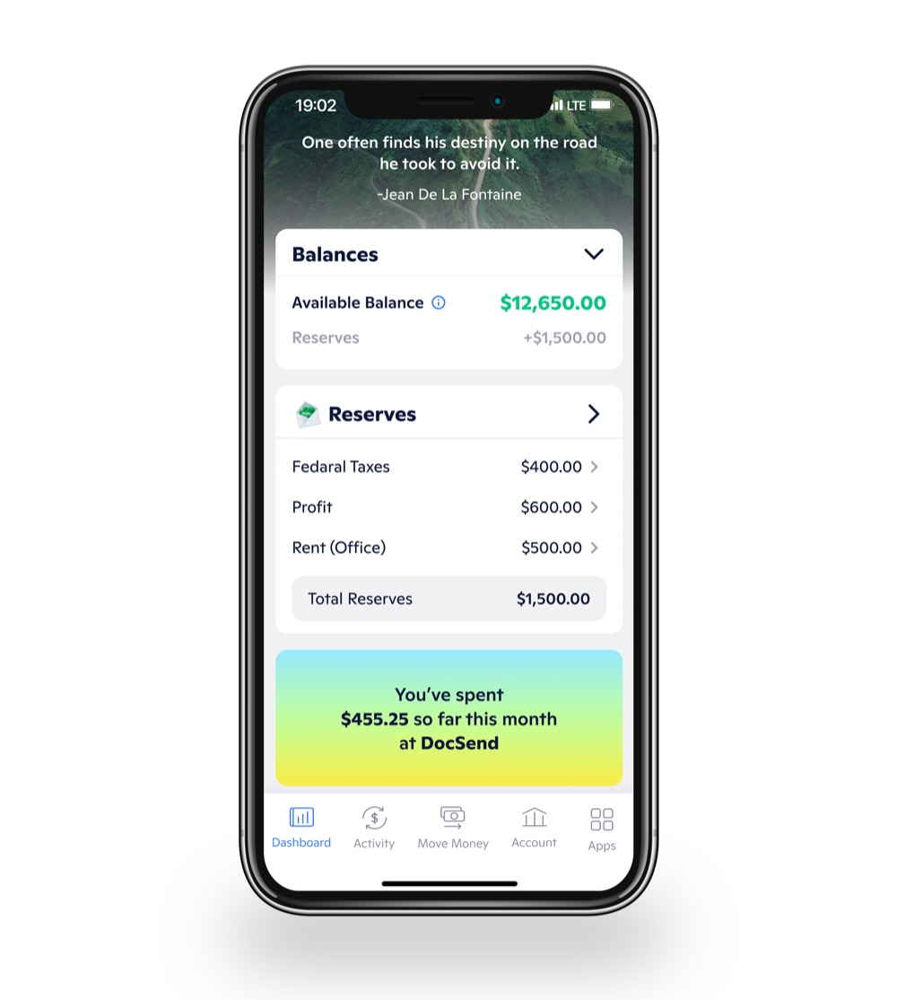

Case study · Novo · USA
Digital banking for small businesses.
Payments rails and onboarding automation for Novo, a US digital bank serving 200,000+ freelancers, solopreneurs, and SMEs.
200K+US small businesses served by Novo
4Currencies via Wise: USD, GBP, EUR, AED
3Risk vendors: Alloy, Socure, Castle

01
The problem
- Small businesses were underserved by incumbent US banks - slow account opening, few integrations.
- A digital bank has to open accounts fast while still meeting AML/KYC and fraud obligations.
- Customers needed to move money domestically and across borders from one account.
02
What I worked on
- Payment rails - ACH (Nacha), wires, debit cards, mobile check deposits, and cross-border transfers with MFS and Mastercard.
- Multi-currency FX via Wise for USD, GBP, EUR, and AED.
- OCR onboarding and automated approvals to speed up account opening.
- AML and fraud controls with Castle, Alloy, and Socure.
03
Trade-offs
- Automation vs. risk. Automated approvals only work when the identity and fraud signals behind them are trustworthy - so the vendor stack and the approval rules were designed together.
- Build vs. partner. FX went through Wise rather than an in-house build, trading some margin for speed and coverage.
04
The result
- Faster, largely automated onboarding for US small businesses.
- Domestic and cross-border money movement - ACH, wires, cards, and four-currency FX - from a single business account.
Next case study: BOTIM Ultra →
Want the detail?
Happy to walk through the decisions, data, and what I'd do differently.